Categorías y características: opción C implementada
Capturas reales del editor y de administración, tomadas el 10 de noviembre de 2026 con datos de prueba en una base aislada.
Elige una categoría y combina sus características. Por ejemplo: Cuadernos → Cuadriculado + Universitario + 100 hojas + 7 mm. No hay un segundo nivel de subcategorías.
Pulsa una imagen para verla a tamaño completo. Abrir la aplicación local.
Cuadernos: referencia y aplicación


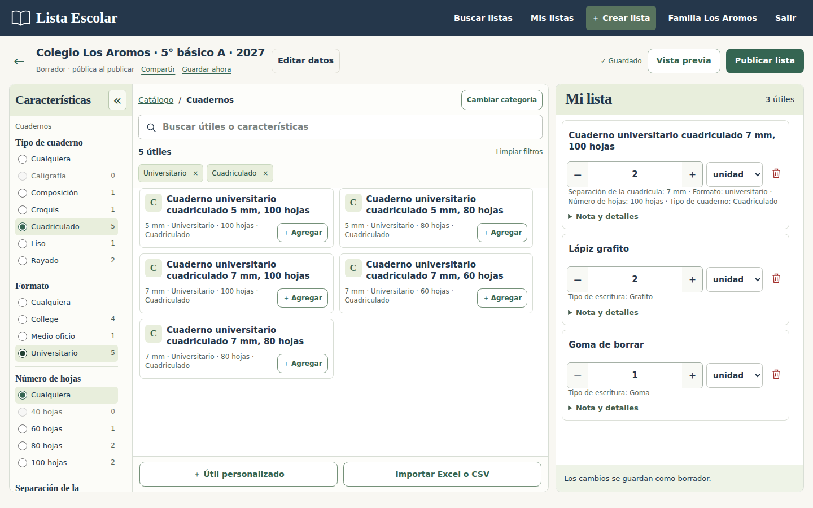
Espacio de trabajo · 1366 × 768
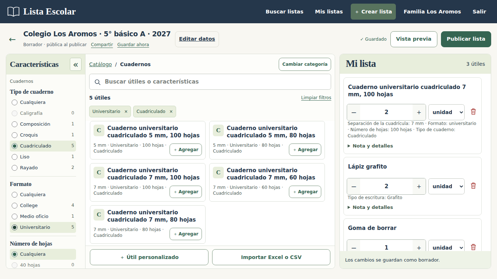

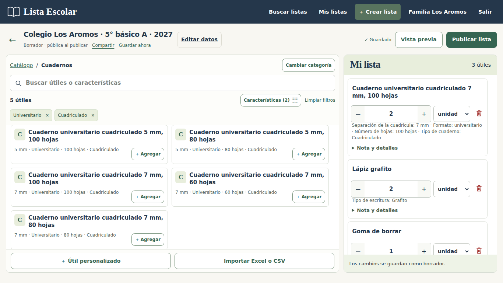

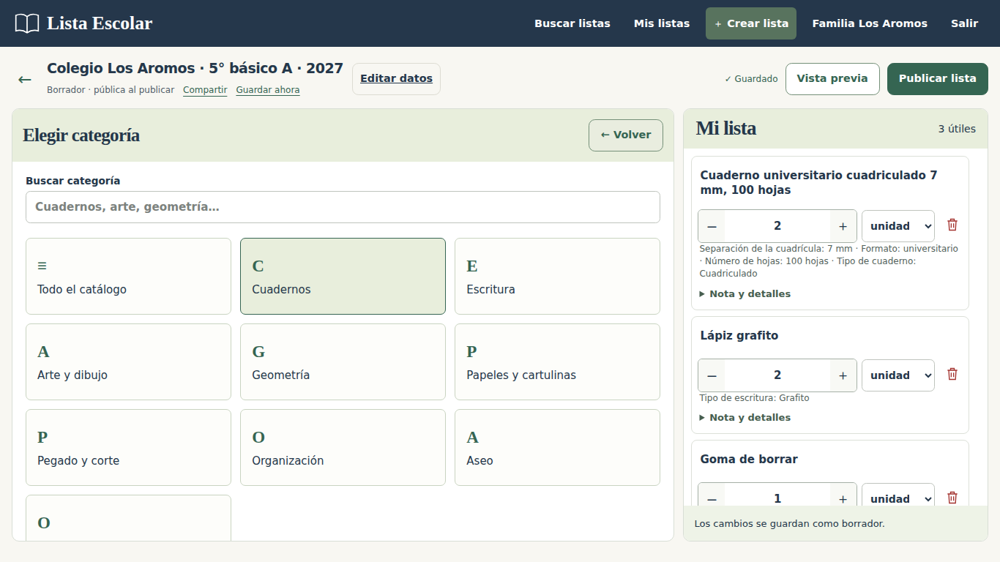
Geometría: características según el tipo


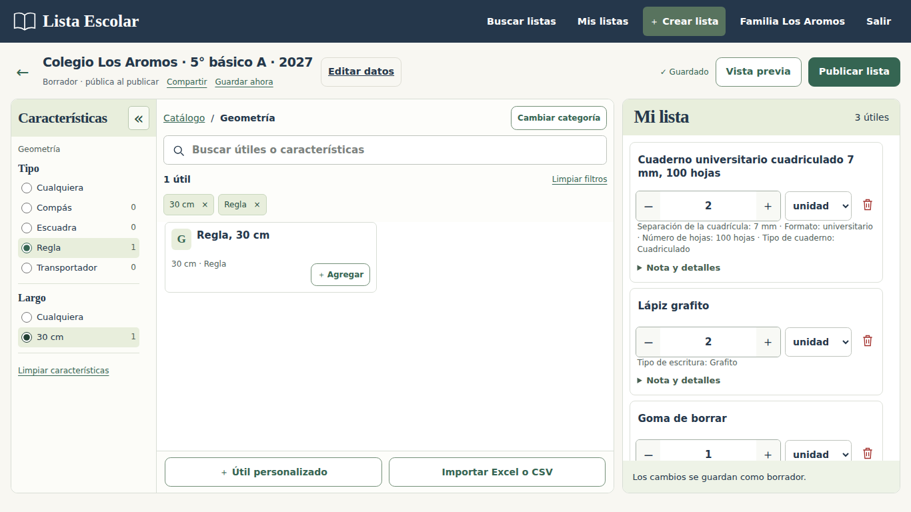
Teléfonos: filtrar y agregar

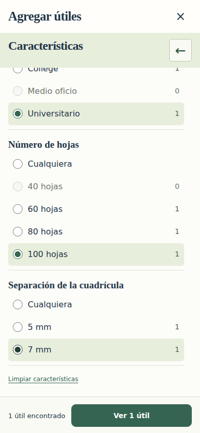

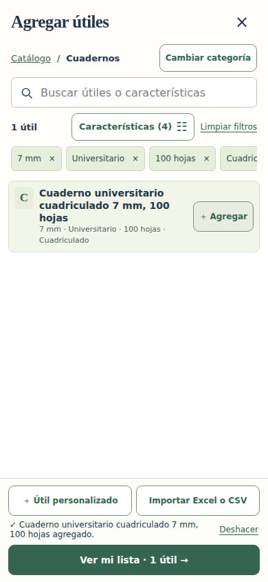

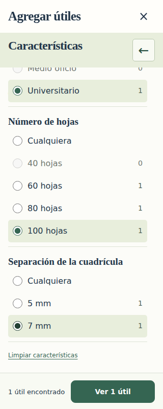

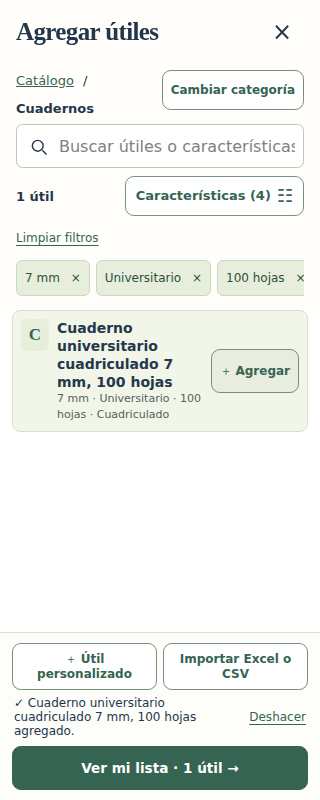
Crear útiles y configurar sus características

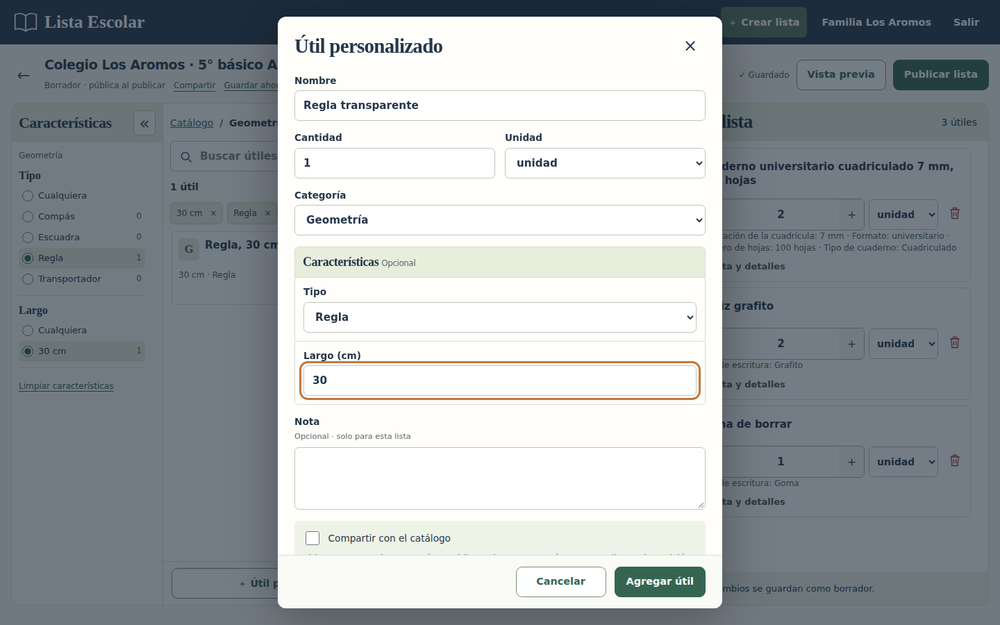

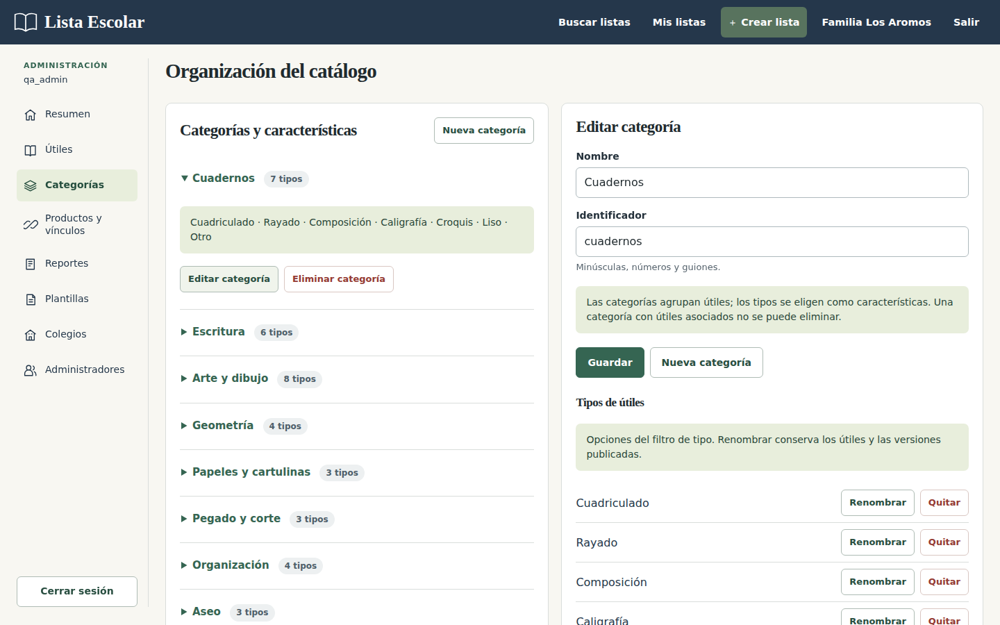

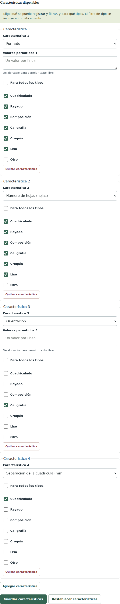

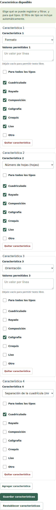